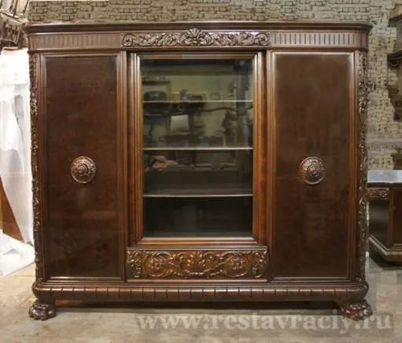
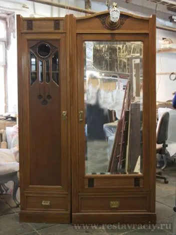
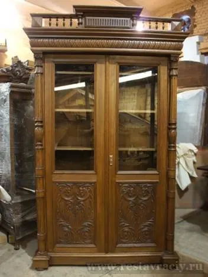
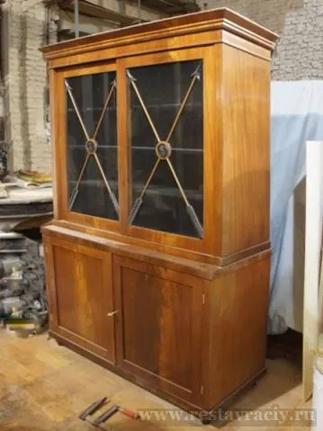
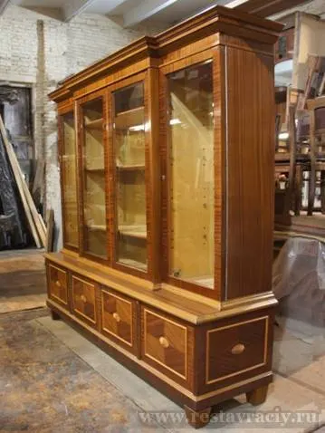

Цены
Цена реставрации шкафа
Для расчёта покажите весь шкаф, петли, замки и направляющие ящиков. Если снаружи требуется лишь освежить лак, состав заказа отличается от полной разборки корпуса.


Данные мастерской
| Шкаф | Косметический ремонт | Частичный ремонт старого шкафа без восстановления конструкции | Полная реставрация антикварного шкафа |
|---|---|---|---|
| Шкаф для посуды | 10-20 | 30 | 80-150 |
| 1-створчатый зеркальный | 10-20 | 40 | 80-120 |
| 2-х створчатый | 10-30 | 50 | 100-150 |
| 3-х створчатый | 20-30 | 70 | 120-150 |
| Большой комбинированный | 20-40 | 80 | 120-200 |
В материале мастерской
Фотографии и детали



Открыть снимок у мастерской


Открыть снимок у мастерской


Открыть снимок у мастерской


Открыть снимок у мастерской
Есть похожая вещь?
Подберите ракурсы для предварительной оценки.